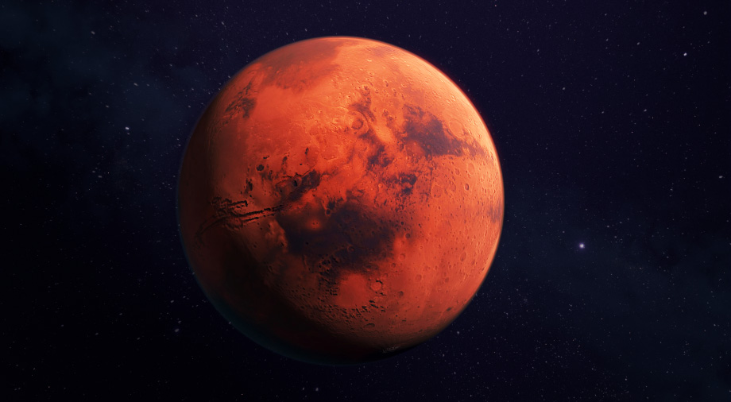
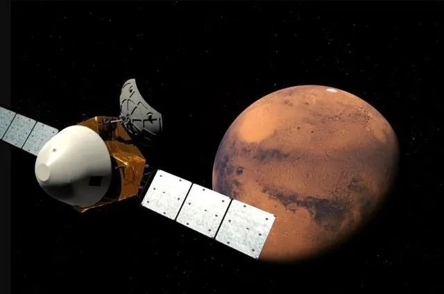
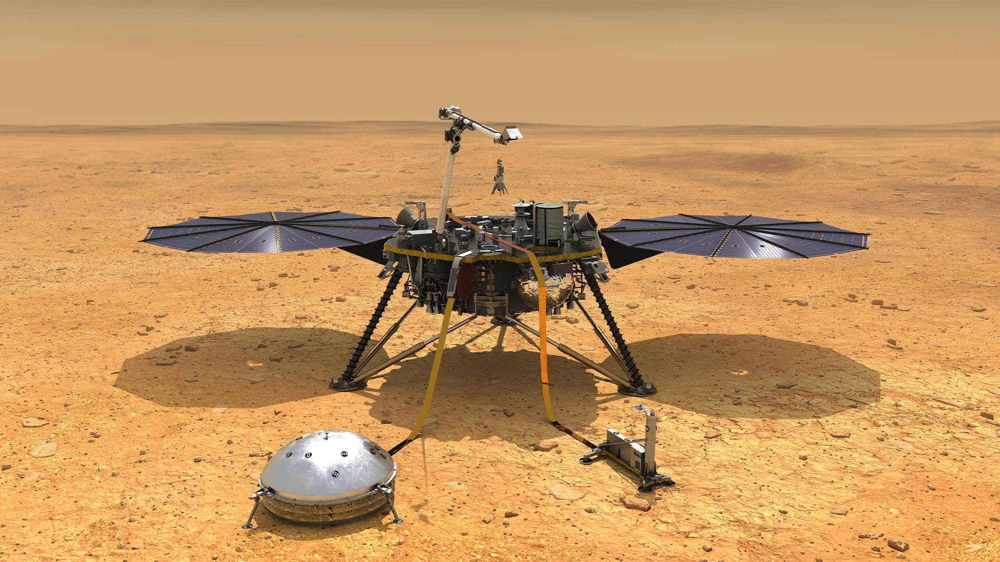
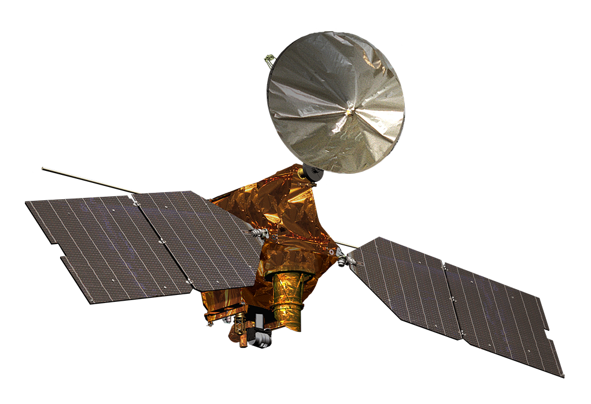
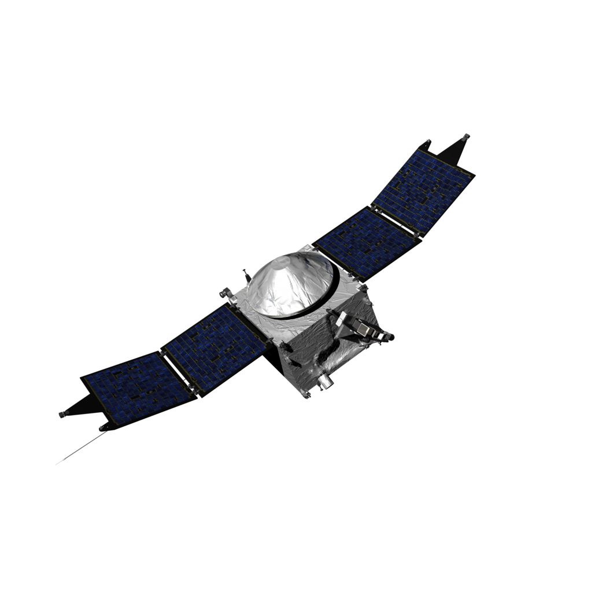
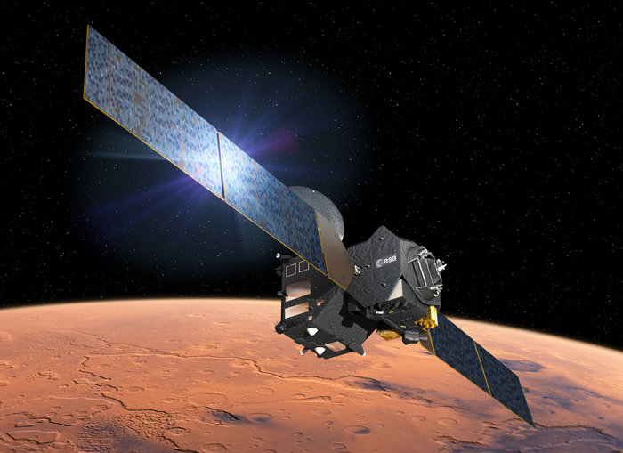
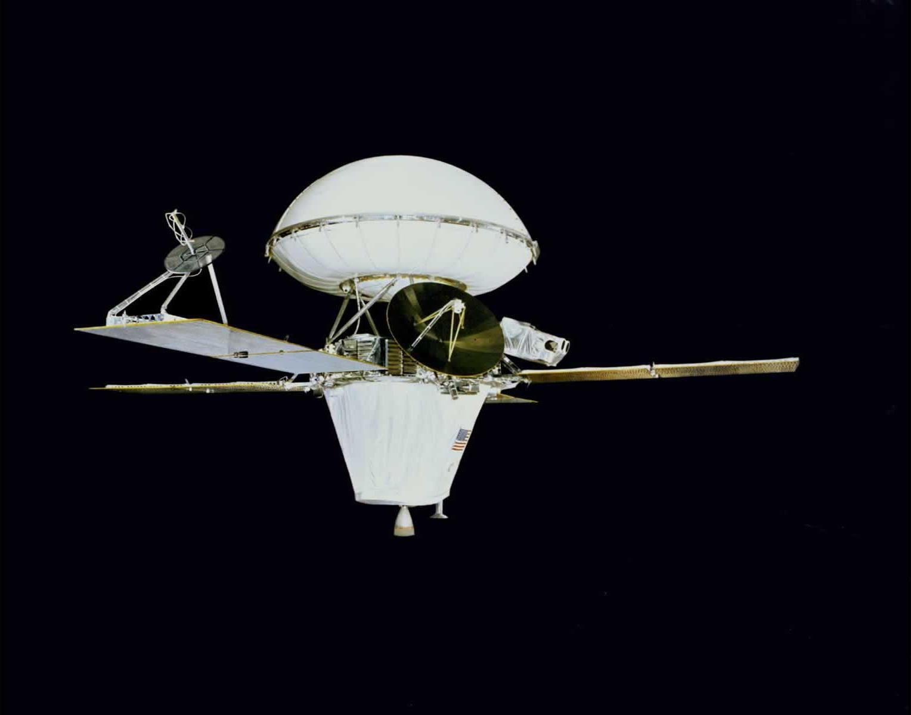
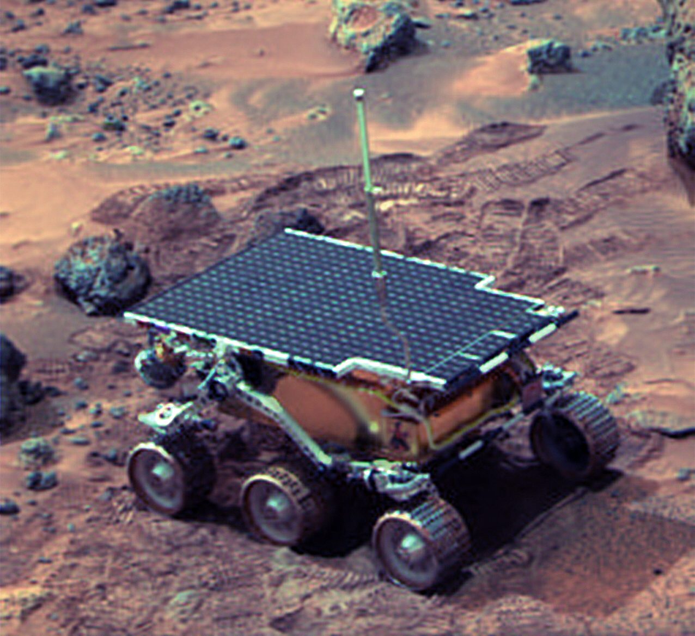
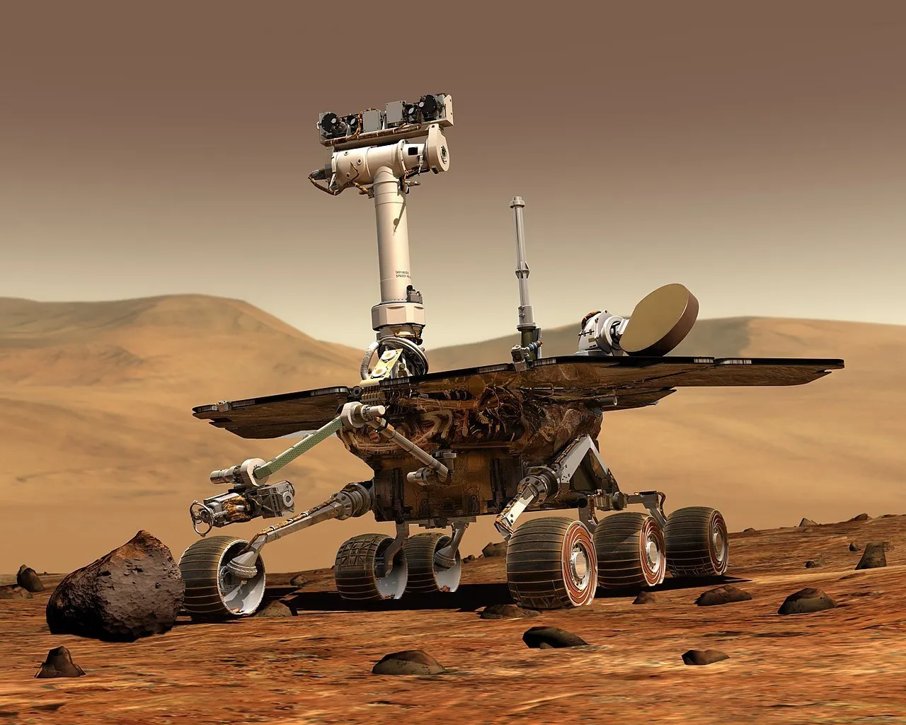
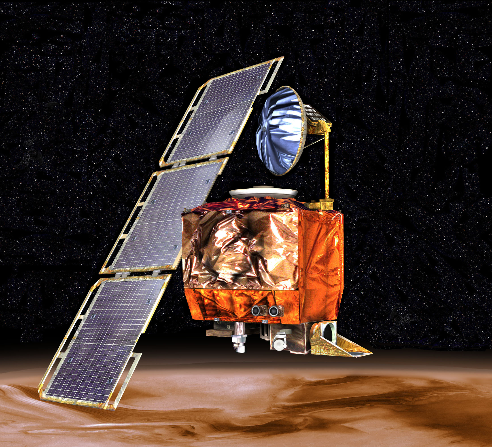

Марс — четверта планета від Сонця, таємничий «червоний сусід» Землі, який упродовж століть приковує до себе погляди вчених, мрійників та дослідників. Цей світ, вкритий іржавим пилом та розрізаний гігантськими каньйонами, є не просто небесним тілом, а ключем до розуміння еволюції нашої Сонячної системи.
🔍 Ключові особливості Марса
Марс — це планета екстремальних рекордів. Попри те, що він удвічі менший за Землю, його ландшафти значно масштабніші за наші.
Гігантські геологічні об'єкти
1. Олімп (Olympus Mons)
1. Олімп: Найвищий вулкан у всій Сонячній системі. Його висота становить приблизно 21-22 км, що майже втричі вище за Еверест. Олімп настільки великий, що за площею він дорівнює території Франції.
2.Долини Марінера (Valles Marineris)
Система каньйонів, яка за довжиною дорівнює відстані від Києва до Лісабона (близько 4 000 км). Це найбільший каньйон у Сонячній системі, який у 10 разів довший і в 7 разів глибший за Гранд-Каньйон у США
Атмосфера та клімат
Марсіанська атмосфера майже повністю складається з вуглекислого газу (CO₂), який замерзає на полюсах взимку:
• Вуглекислий газ (CO₂): 95,3%
• Азот (N₂): 2,7%
• Аргон (Ar): 1,6%
• Кисень (O₂): 0,13%
• Водяна пара (H₂O): до 0,2%
Клімат Марса
Клімат на Марсі суворий і холодний, нагадує дуже холодну антарктичну пустелю
• Температура: Середня температура на поверхні становить близько -58°C.
• Вдень улітку: На екваторі температура може підніматися від 0°C до +20°C.
• Вночі взимку: Може опускатися до -100°C і нижче.
• Сезони: Марс має нахил осі, схожий на земний, тому там є зміна пір року, але вони тривають майже вдвічі довше, оскільки рік на Марсі довший.
• Погодні явища: Часто трапляються пилові бурі, які іноді охоплюють усю планету і можуть тривати місяцями.
• Сині заходи сонця: Через специфіку пилу в атмосфері, марсіанські заходи сонця мають блакитний відтінок.
Дослідження
Дослідження Марса — це активний процес вивчення четвертої планети Сонячної системи, спрямований на пошук ознак життя, аналіз геології (ареології) та підготовку до пілотованих місій
Основні місії на Марсі (історичні та активні):
• Активні марсоходи та посадкові модулі:
• Perseverance (NASA, 2021–дотепер): Шукає ознаки стародавнього життя в кратері Єзеро та збирає зразки ґрунту.
• Curiosity (NASA, 2012–дотепер): Досліджує кратер Гейл, вивчаючи життєпридатність планети.
• Tianwen-1 / Zhurong (Китай, 2021–дотепер): Перша китайська місія, що включає орбітальний апарат та марсохід.

• InSight (NASA, 2018–2022): Вивчав внутрішню будову Марса (місію завершено, але дані аналізуються).

Активні орбітальні апарати:
• Mars Reconnaissance Orbiter (NASA, 2006–дотепер): Детальна зйомка поверхні.

• MAVEN (NASA, 2014–дотепер): Дослідження атмосфери.

• ExoMars Trace Gas Orbiter (ЄКА/Роскосмос, 2016–дотепер): Пошук газів, пов'язаних із біологічною активністю.

Знакові історичні місії:
• Viking 1 та 2 (NASA, 1976): Перші успішні посадкові модулі, що передали фото поверхні.

• Mars Pathfinder / Sojourner (NASA, 1997): Перший марсохід.

• Spirit та Opportunity (NASA, 2004–2010/2018): Марсоходи-довгожителі, які знайшли докази існування води в минулому.

Невдала місія:
• Mars Observer (1992)
(Зв'язок зник за три дні до виходу на орбіту.)

Колонізація Марсу
Чому саме Марс?
Серед усіх об’єктів Сонячної системи Марс — найбільш «дружня» до нас планета
• 1.Ресурси: На планеті є поклади водяного льоду та вуглекислий газ, з яких можна отримати кисень і паливо.
• 2.Гравітація: Складає 38% від земної — цього достатньо, щоб запобігти швидкій атрофії м’язів, але зручно для зльоту ракет.
• 3.Доба: Триває 24 години та 39 хвилин (майже як на Землі)
Гонка за марс
Сьогодні гонка за Марс — це поєднання державних бюджетів та приватного капіталу:
• SpaceX (Ілон Маск): Стратегія базується на ракеті Starship. План Маска — побудувати самодостатнє місто на мільйон людей до 2050 року.
• NASA (Програма Artemis): Спочатку Місяць, потім Марс. NASA планує використати місячну орбітальну станцію Gateway як пересадний пункт для пілотованих польотів на Марс у 2030-х роках.
• Китай (CNSA): Піднебесна активно розробляє власні плани висадки тайконавтів, що стимулює нову космічну конкуренцію.
У чому складність?
• 1. Радіація Без магнітного поля та щільної атмосфери космічні промені стають смертельними. Колоністам доведеться жити в підземних бункерах або покривати модулі товстим шаром марсового реголіту.
• 2. Психологія ізоляції, Політ триває від 6 до 9 місяців у тісному просторі. Додайте до цього затримку зв’язку з Землею (до 20 хвилин), і ви отримаєте величезний тиск на психіку екіпажу.
• 3. Ресурсна незалежність (ISRU)Вести з собою все — неможливо. Технологія ISRU (In-Situ Resource Utilization) дозволить добувати воду з льоду та виробляти метан для зворотного польоту прямо на місці. Експеримент MOXIE на борту Perseverance вже успішно отримав кисень з марсіанського повітря.
• 4. ЕнергетикаСонячні панелі на Марсі малоефективні через пилові бурі та віддаленість від Сонця. Майбутнє колонії — за компактними ядерними реакторами (на кшталт проекту Kilopower).
• 5. Пилові буріМарсіанський пил надзвичайно дрібний і токсичний. Він може виводити з ладу техніку та викликати проблеми зі здоров'ям у людей.
10 Цікавих Фактів про Марс!
• 1.Марс був знайдений у 1537 році Однак, як планету зі специфічними особливостями (моря, полярні шапки), Марс вперше побачив Галілео Галілей у 1610 році за допомогою телескопа
• 2.Поверхня Марса вкрита залізом, що іржавіє, що надає йому характерного червонуватого відтінку.
• 3.Марс має 2 супутника Фобос і Деймос Обидва супутники були відкриті в 1877 році американським астрономом Асафом Холлом
• 4.На марсі 742 млн років тому була рідка вода
• 5.На Марсі виникають найбільші пилові бурі в Сонячній системі, які можуть охоплювати всю планету на кілька тижнів.
• 6.Марс є найбільш дослідженою планетою після Землі
• 7. До 2013 року з 13 спроб м'якої посадки на Марс, 6 закінчилися невдачею
• 8.На Марсі є дві крижані шапки, які змінюють свій розмір залежно від сезонів. Обидві марсіанський полярні шапки складаються з замерзлої води, але південна завжди покрита замерзлим двооксидом вуглецю - сухим льодом
• 9.Мало хто знає що Марс має власний прапор. Його розробили інженери НАСА і хоч він не має жодного офіційного статусу прапор вже встигли затвердити Марсіанське (Mars Society) та Планетарне товариств (The Planetary Society). А також прапор вже побував на орбіті. Він складається з трьох вертикальних полос різного кольору, які символізують майбутню історію Марса. Червона смуга — планета сьогодні, а зелена (рослини) і синя (вода) — майбутні етапиймовірного освоєння Марсу людьми.